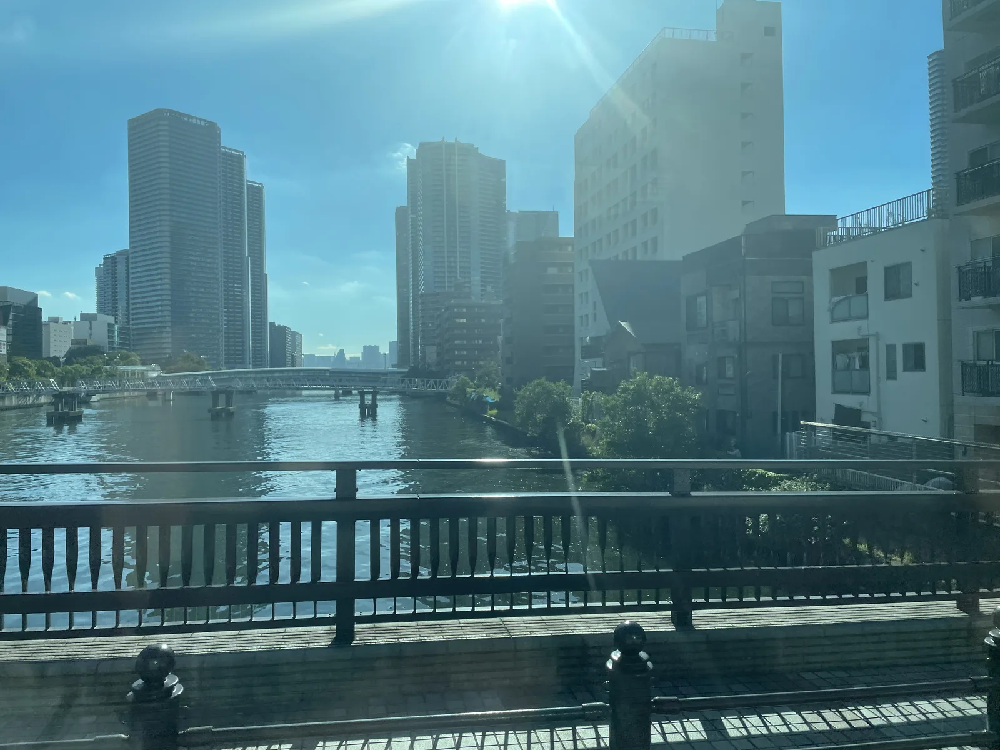
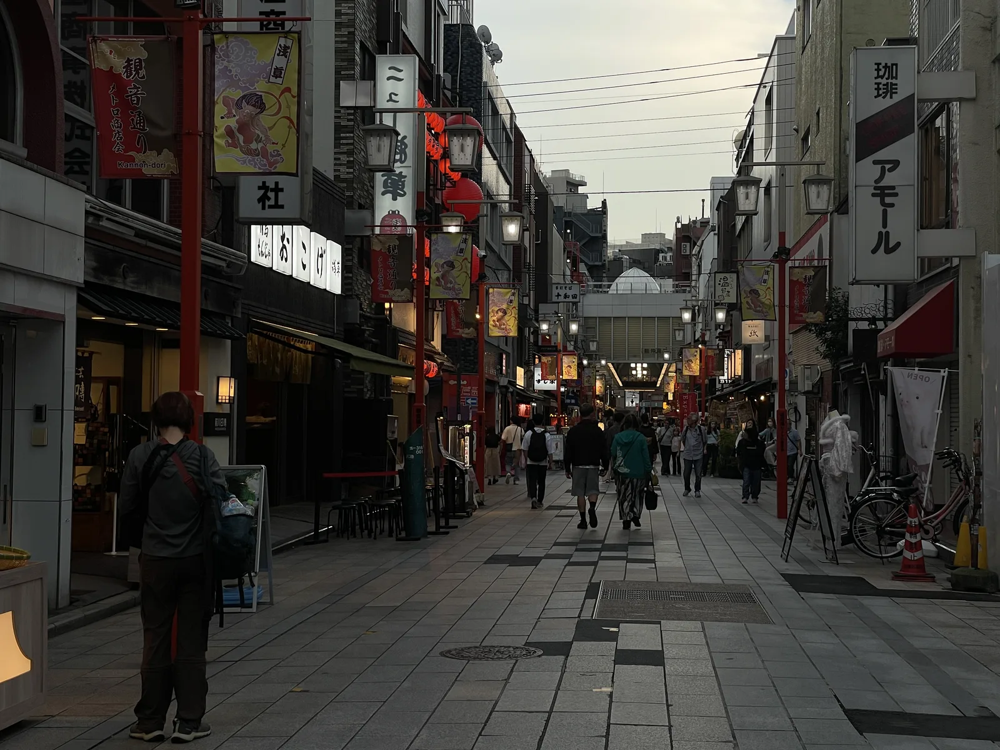

GYO-10 | 業10Waterfront & skyline
From central Tokyo to the bay area and Tokyo Skytree, with a changing cityscape all along the way.
Shimbashi → Ginza → Tsukiji → Toyosu → Tokyo Skytree
Explore Tokyo sightseeing by Toei Bus, from Shibuya's modern energy to old Tokyo and the waterfront. Compare scenic routes and discover the city at street level.

GYO-10 | 業10From central Tokyo to the bay area and Tokyo Skytree, with a changing cityscape all along the way.
Ride through some of Tokyo's most modern neighborhoods, from Shibuya toward Roppongi and Shimbashi.

TO-08 | 都08A classic east-Tokyo ride through local neighborhoods, Asakusa and the Tokyo Skytree area.
Toei GO Tokyo is an independent travel app. It is not an official app of the Tokyo Metropolitan Government or Tokyo Metropolitan Bureau of Transportation.